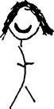

İnsanların hayatlarında dönüm noktaları vardır. Sanırım özellikle de çocukken. Bazıları için bu, Jesse Owens Olayı’ydı. Başkaları için yatak ıslattıran bir isteri anıydı.
1939 Mayıs ayının sonlarıydı ve o gecenin diğer gecelerden bir farkı yoktu. Liesel’in annesi demir yumruğunu sallıyordu ve babası dışarıdaydı. Liesel ön kapıyı temizlemiş, Himmel Sokağı’nın tepesindeki gökyüzünü izliyordu.
Daha önce bir geçit olmuştu.
NSDAP’nin (diğer adıyla Nazi Partisi) kahverengi gömlekli aşırıcı üyeleri, pankartlarını gururla taşıyıp başlarını sopa yutmuş gibi dik tutarak Münih Caddesi’nden geçmişlerdi. Bir şarkı söylüyor, sesleri kükrer gibi çıkıyordu: Deutschland über Alles. Almanya Her Şeyden Üstündür.
Her zamanki gibi alkışlanmışlardı.
Sonra da belirsiz bir yöne doğru yürümeye devam etmişlerdi. İnsanlar sokaklarda durup izlemiş, bazıları kollarını dümdüz kaldırarak selam vermiş, diğerlerinin alkışlamaktan avuçları şişmişti.
Bazılarının yüzleri gururla gerilmişti. Bir de Alex Steiner gibi insan biçimli kütükleri andırarak duranlar ve görev gereği mekanik bir şekilde alkışlayanlar vardı. Ve güzel. Teslimiyet.
Liesel, babası ve Rudy’yle birlikte durmuştu. Hans Hubermann’ın yüzü, önüne perde çekilmiş gibiydi.
BAZI ÇATIRDAYAN SAYILAR
1933’ten beri Almanların yüzde doksanı Adolf Hitler’i tereddüt etmeden destekliyordu.
Diğer bir deyişle, desteklemeyen yüzde onluk bir kesim vardı.
Hans Hubermann o yüzde on içindeydi ve bunun bir nedeni vardı.
Liesel o gece de her zamanki gibi rüya gördü. Önce kahverengi gömleklilerin yürüdüğünü gördü ama çok geçmeden onu bir trene bindirdiler ve her zamanki keşfe ulaştı. Kardeşi yine ona bakıyordu.
Çığlık çığlığa uyandığında bu sefer bir şeylerin değiştiğini hemen anlamıştı. Örtülerin altında yapış yapış ve sıcak bir sıvının varlığını hissetmişti. Önce kendini bir şey olmadığına ikna etmeye çalıştı ama babası yaklaşıp ona sarılınca Liesel ağlamaya başlayarak gerçeği onun kulağına fısıldadı.
“Baba, ” diye fısıldadı. “Baba... ” Sadece buydu. Babası muhtemelen kokuyu almıştı.
Hans Hubermann onu nazikçe yataktan alıp çamaşırlığa götürdü. Birkaç dakika sonra o an yaşandı.
“Çarşafları kaldıralım, ” dedi babası ve uzanıp örtüleri çektiğinde, bir şey aradan kayıp takırtıyla yere düştü. Üzerinde gümüş rengi yazılar olan siyah bir kitap dışarı yuvarlanarak yere düşmüştü ve adamın ayaklarının arasında duruyordu.
Hans Hubermann kitaba baktı.
Sonra da çekingen bir tavırla omuz silken kızına.
Ardından yüksek sesle ve biraz zorlanarak kitabın adını okudu: Mezar Kazıcının Elkitabı.
Demek kitabın adı bu, diye düşündü Liesel.
Şimdi aralarında sessizlik vardı. Adam, kız ve kitap. Hans Hubermann kitabı alarak pamuk gibi yumuşacık bir sesle konuştu.
SABAHIN İKİSİNDE SOHBET
“Bu senin mi? ”
“Evet, baba. ”
“Okumak ister misin? ”
Yine, “Evet, baba. ”
Yorgun bir gülümseme.
Metalik, eriyen gözler.
“Eh, o halde okusak iyi olur. ”
Dört yıl sonra yazmak için bodruma indiğinde, Liesel’in kafasında yatağını ıslatma travmasıyla ilgili iki düşünce vardı. Birincisi, kitabı babası bulduğu için son derece şanslı olduğuydu. (Neyse ki daha önce çarşaflar ve örtüler yıkanırken, Rosa yatağı bozup yapma işini Liesel’e bırakmıştı. “Elini çabuk tut, Domuzkız! Bütün gün bununla oyalanamazsın. ”) İkincisi, Hans Hubermann’ın eğitimindeki rolüyle kesinlikle gurur duyuyordu. Bunu tahmin etmeyebilirsiniz, diye yazmıştı, ama okumayı öğrenmemi sağlayan asıl şey okul değildi. Babamdı, insanlar onun pek akıllı olmadığını düşünüyordu. Çok hızlı okuyamadığı doğruydu, fakat kelimelerin ve yazmanın bir defasında gerçekten hayatını kurtardığını sonradan öğrenecektim. En azından, kelimeler ve ona akordeon çalmayı öğreten adam.
“Doğru bir sırayla gidelim, ” dedi Hans Hubermann, o gece. Çarşafları yıkayıp astı. “Şimdi, ” dedi, geri döndüğünde. “Gece kursumuzu başlatalım. ”
Sarı ışık tozlarla yandı.
Liesel soğuk, temiz çarşafların üzerine oturduğunda mahcup ama aynı zamanda mutluydu. Altını ıslatma düşüncesi onu rahatsız ediyordu ama okumayı öğrenecekti. Kitabı okuyacaktı.
Heyecanı giderek artıyordu.
On yaşında okuyan bir dâhinin görüntüleri zihninde canlanıyordu.
Keşke o kadar kolay olsaydı.
“Doğrusunu istersen, ” dedi babası, önceden açıklayarak, “Ben pek de iyi bir okur değilimdir. ”
Ama yavaş okumasının önemi yoktu. Aslında normalden yavaş okuyor olmasının yardımı bile olmuştu. Belki de kızın bu beceriden yoksun olmasının yarattığı hüsrana daha iyi dayanabilirdi.
Yine de, Hans başlangıçta kitabı tutup sayfalarına bakarken biraz huzursuz gibi görünüyordu.
Liesel’in yanma dönüp yatağa oturduğunda, arkasına yaslanarak bacaklarını yatağın kenarından sarkıttı. Kitabı tekrar inceleyerek battaniyenin üzerine bıraktı. “Şimdi, neden senin gibi tatlı bir kız böyle bir kitabı okumak istesin? ”
Liesel omuz silkti. Mezarcı çırağı Goethe veya benzeri yazarları okuyor olsaydı, şimdi yatakta aralarında duran kitap o olacaktı. Açıklamaya çalıştı. “Ben... şey... karların arasındaydı ve... ”
Kısık sesle söylenen kelimeler yatağın kenarından düşerek toz gibi yere boşaldı.
Ama babası ne diyeceğini biliyordu. Her zaman bilirdi zaten.
Bir eliyle saçlarını sıvazladı. “Peki, bana bir söz vermeni istiyorum, Liesel. Eğer yakında ölürsem beni doğru şekilde gömmelerine dikkat edeceksin. ”
Liesel büyük bir içtenlikle başıyla onayladı.
“Altıncı Bölüm’ü ya da Dokuzuncu Bölüm’deki Dördüncü Adım’ı atlamak yok. ” Hans Hubermann güldü; altını ıslatan da öyle. “Eh, bu konuda anlaştığımıza sevindim. Artık başlayabiliriz. ”
Hans Hubermann oturuşunu ayarladı ve kemikleri zemin tahtaları gibi gıcırdadı. “Eğlence başlasın. ”
Gecenin sessizliğinde kitap açıldı.
Liesel geri dönüp baktığında, Mezar Kazıcının Elkitabı'nın ilk sayfasına göz atarken babasının ne düşündüğünü tam olarak söyleyebiliyordu. Metnin zorluğunu anladığında, böyle bir kitabın ideal olmaktan çok uzak olduğunu açıkça anlamıştı. Kitapta kendisinin bile okumakta zorlandığı kelimeler vardı. Konunun ne kadar iç karartıcı olduğunu söylemeye bile gerek yoktu. Kıza gelince, anlamaya çalışmasa bile, aniden okuyabilme isteğiyle dolmuştu. Belki de kardeşinin doğru şekilde gömüldüğünden emin olmak istiyordu. Nedeni her ne olursa olsun, o kitabı okuma açlığı on yaşındaki bir çocuğun hissedebileceği kadar yoğundu.
Birinci Bölüm’ün adı Birinci Adım: Doğru Malzemeleri Seçmek’ti. Kısa bir giriş sayfasında, sonraki yirmi sayfada anlatılacak malzemeleri tanıtıyordu. Kürek, kazma, eldiven vs. tiplerine ek olarak, malzemelerin doğru şekilde bakımları da anlatılıyordu. Bu mezar kazıcılığı işi ciddiydi.
Babası sayfaları çevirirken, Liesel’in kendisine baktığının farkındaydı. O gözler ona bakıyor ve dudaklarından bir şeyler dökülmesini bekliyordu.
“İşte. ” Hans Hubermann kıpırdandı ve kitabı Liesel’e verdi. “Şu sayfaya bak ve bana kaç kelime okuyabildiğini söyle. ”
Liesel sayfaya baktı ve yalan söyledi.
“Yaklaşık yarısını. ”
“Birazını oku, ” dedi babası ama Liesel okuyamadı elbette. Hans Hubermann ona okuyabildiği kelimeleri göstermesini ve sesli okumasını söylediğinde, Liesel sadece üç tanesini sayabildi ve üçü de Almanca artikellerdi. Bütün sayfada bu artikellerden yaklaşık iki yüz tane olmalıydı.
Bu, babasının düşündüğünden daha zor olabilirdi.
Liesel onun bir an düşüncelere daldığını fark etti.
Hans Hubermann öne eğildi, ayağa kalktı ve tekrar dışarı çıktı.
Bu kez geri döndüğünde, “Aslında daha iyi bir fikrim var, ” dedi. Elinde kalın bir badanacı kalemi ve bir tomar zımpara kâğıdı vardı. “En baştan başlayalım. ” Liesel buna itiraz etmedi.
Babası zımpara kâğıdının arka yüzünün sol köşesine iki santimlik bir kare çizdi ve içine büyük bir A harfi koydu. Diğer köşesine aynı harfin küçük halini yazdı. Şimdiye kadar iyi gidiyorlardı.
“A, ” dedi Liesel.
“A harfiyle başlayan bir şey söyle. ”
Liesel gülümsedi. “Apfel.3*”
Babası kelimeyi büyük harflerle yazdı ve altına biçimsiz bir elma çizdi. Sonuçta ressam değil, badanacıydı. İşi bitince Liesel’e baktı. “Şimdi sıra B’de. ”
Bu şekilde alfabeyi sayarlarken, Liesel’in gözleri iri iri açıldı. Bunu okulda ve hatta anaokulunda yapmıştı ama bu kez daha iyiydi. Orada tek öğrenci kendisiydi ve diğerlerinin arasında dev
Apfel: 3Almancada elma anlamına gelen kelime, (e. n. )
gibi kalmıyordu. Kelimeleri yazarken ve resimleri çizerken babasının elini izlemek hoşuna gitmişti.
“Ah, haydi, Liesel, ” dedi babası, Liesel devam etmekte zorlandığında. “D ile başlayan bir kelime. Çok kolay. Beni hayal kırıklığına uğratıyorsun. ”
Liesel düşünemiyordu.
“Haydi! ” Babası oyunbaz bir tavırla fısıldadı. “Anneni düşün. ”
O anda kelime tokat gibi yüzüne indi ve Liesel parlayan gözlerle sırıttı. “DOMUZKIZ! ” diye bağırdı. Babası bir kahkaha patlattı ve sonra sessizleşti.
“Şşş, sessiz olmamız gerek. ” Ama yine bir kahkaha attı ve kelimeyi yazarak bir resimle tamamladı.
TİPİK BİR HANS HUBERMANN RESMİ

“Baba! ” diye fısıldadı Liesel. “Gözlerim yok. ”
Babası Liesel’in saçlarını okşadı. Kız tuzağa düşmüştü. “Öyle bir gülümsemeyle, ” dedi Hans Hubermann, “gözlere ihtiyacın yok zaten. ” Kızına sarıldı ve tekrar resme baktı. “Şimdi sıra E’de. ”
Alfabe tamamlanıp on kere üzerinden geçildikten sonra, babası ona doğru eğilerek, “Bu gecelik bu kadar yeter, ” diye fısıldadı.
“Birkaç kelime daha? ”
Hans Hubermann kararlıydı. “Yeter. Sabah uyanınca sana akordeon çalacağım. ”
“Teşekkür ederim, baba. ”
“İyi geceler. ” Babası hafifçe güldü. “İyi geceler, Domuzkız. ” “İyi geceler, baba. ”
Hans Hubermann ışığı kapattı, geri döndü ve koltuğa oturdu. Liesel karanlıkta gözlerini açık tuttu. Kelimeleri seyrediyordu.